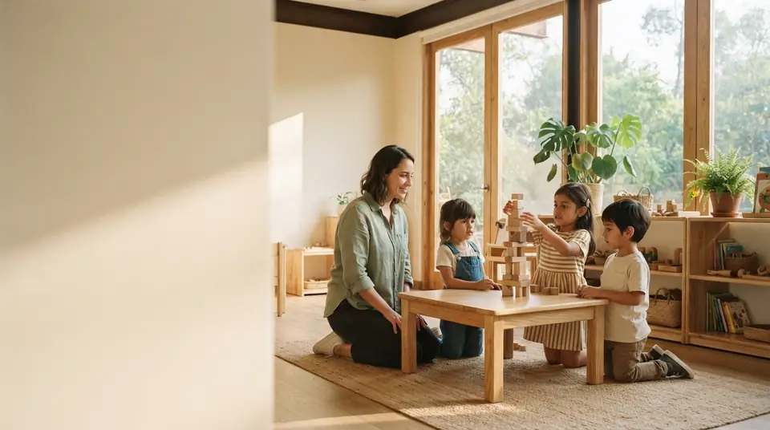
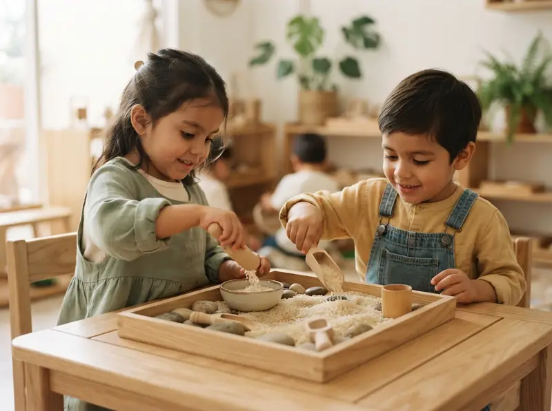
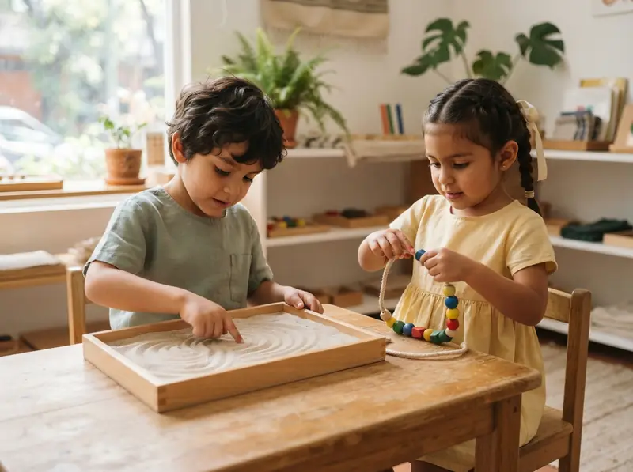
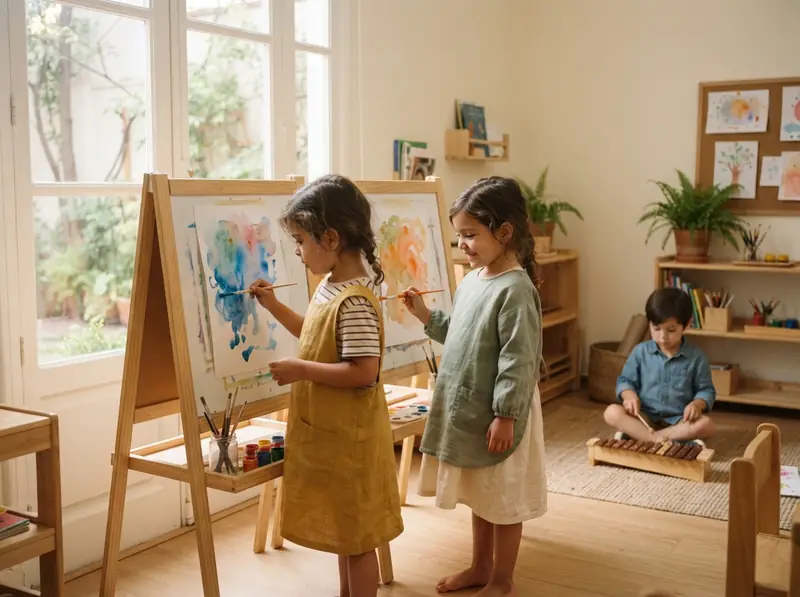
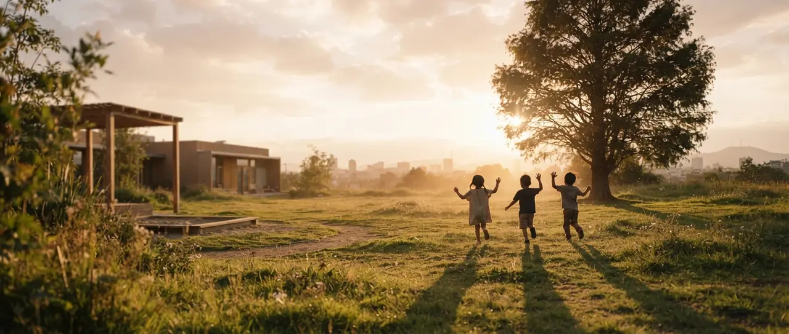
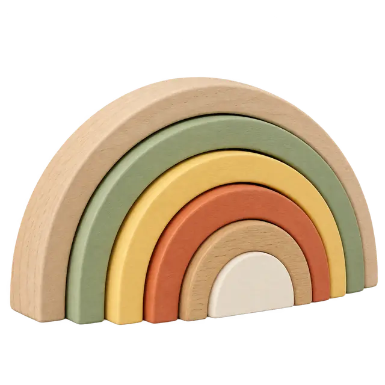

Admisiones ciclo 2027–2028 abiertas
Donde la curiosidad se convierte en amor por aprender
Programas de educación inicial para niñas y niños de 3 a 6 años en Coyoacán. Aprenden jugando, en grupos pequeños y acompañados por un equipo que conoce a cada familia por su nombre.
-
8:1
Ratio alumno-maestra en todos los grupos
-
15+
Años de experiencia en educación inicial
-
100%
Accesos controlados con registro de adultos autorizados
-
3–6
Años de edad, en tres programas por etapa
Nuestros programas
Un programa para cada etapa
Cambia de nivel para ver objetivos, un día típico y detalles de horario. Todo sin recargar la página.

Pre-Kinder
Primer encuentro con la escuela: desarrollo sensorial, lenguaje oral y socialización temprana en un ambiente tranquilo y predecible.
- Exploración sensorial con materiales naturales: texturas, sonidos y aromas.
- Lenguaje oral: canciones, rimas y conversación en círculo.
- Socialización temprana: turnos, compartir y nombrar emociones.
- Motricidad fina y gruesa, y primeros hábitos de autonomía.
| Hora | Actividad |
|---|---|
| 8:00 | Bienvenida y juego libre |
| 8:45 | Círculo de la mañana: canciones y calendario |
| 9:15 | Exploración sensorial por estaciones |
| 10:15 | Refrigerio compartido |
| 10:45 | Patio y jardín |
| 11:30 | Música y movimiento |
| 12:15 | Cuento y momento de calma |
| 13:00 | Salida (o extensión de horario) |
- Edad
- 3 años cumplidos al inicio del ciclo
- Horario
- Lunes a viernes, 8:00–13:00
- Extensión
- Opcional hasta las 15:00 con comida
- Grupo
- Máx. 16 alumnos con 2 educadoras

Kindergarten
Iniciación a la lectoescritura y matemáticas lúdicas con materiales manipulativos, proyectos de indagación y el inglés como parte natural del día.
- Conciencia fonológica, trazo y primeras lecturas con letras de lija y arena.
- Número, cantidad y patrones con cuentas, regletas y juegos de mesa.
- Proyectos de indagación: preguntar, observar y explicar el mundo.
- Inglés por inmersión en rutinas, canciones y juego.
| Hora | Actividad |
|---|---|
| 8:00 | Llegada y trabajo libre en ambientes |
| 8:45 | Asamblea: plan del día y noticias |
| 9:15 | Lectoescritura en pequeños grupos |
| 10:15 | Refrigerio y patio |
| 11:00 | Matemáticas lúdicas |
| 11:45 | Proyecto de indagación / inglés |
| 12:45 | Comida |
| 14:00 | Salida (o After-School) |
- Edad
- 4 y 5 años (K2 y K3)
- Horario
- Lunes a viernes, 8:00–14:00
- Idiomas
- Español e inglés por inmersión
- Grupo
- Máx. 16 alumnos con 2 educadoras

After-School y actividades
Tardes de arte, música, psicomotricidad y bilingüismo para alumnos de Casa Alba y de otras escuelas. Se eligen por días.
- Arte: pintura, barro y collage como lenguaje de expresión.
- Música: ritmo, canto e instrumentos de percusión.
- Psicomotricidad: equilibrio, coordinación y juego corporal.
- Bilingüismo: cuentos, juegos y canciones en inglés.
| Hora | Actividad |
|---|---|
| 14:00 | Comida y descanso |
| 15:00 | Taller del día (arte, música o psicomotricidad) |
| 16:00 | Merienda y jardín |
| 16:30 | Cuentos y juegos en inglés |
| 17:30 | Salida |
- Edad
- 3 a 6 años
- Horario
- Lunes a viernes, 14:00–17:30
- Modalidad
- 2, 3 o 5 días por semana
- Abierto a
- Alumnos de cualquier escuela

El jardín, 4:30 p. m.
Nuestro enfoque
Cuatro ideas guían cada día en el aula
Inspirado en Reggio Emilia y Montessori: el ambiente invita, la maestra observa y acompaña, y cada niña y niño avanza a su ritmo.
-
01
Aprender jugando
El juego es el trabajo de la infancia. Diseñamos ambientes con materiales abiertos (bloques, arena, agua, telas) que invitan a construir, probar y volver a intentar.
- Juego libre y guiado cada día
- Materiales naturales y abiertos
-
02
Pensamiento crítico
Partimos de sus preguntas. Proyectos de indagación en los que observan, formulan hipótesis y explican lo que descubren con sus propias palabras.
- Proyectos que nacen del grupo
- Documentación visible de su proceso
-
03
Inteligencia emocional
Nombrar lo que sienten, pedir ayuda y cuidar a los demás. El rincón de calma y el círculo diario les dan herramientas para convivir.
- Círculo de emociones diario
- Acompañamiento cercano en la adaptación
-
04
Autonomía y comunidad
Muebles a su altura y tareas reales (servir, ordenar, cuidar plantas) que construyen confianza y sentido de pertenencia.
- Vida práctica integrada a la rutina
- Familias que participan en la comunidad
Instalaciones y seguridad
Espacios pensados a su altura
Acceso controlado
Una sola entrada con puerta de seguridad y registro digital de cada llegada y salida.
Entrega a adultos autorizados
Solo entregamos a personas registradas por la familia, con identificación oficial.
Videovigilancia en áreas comunes
Cámaras en accesos, pasillos y patio. Nunca en baños ni zonas de cambio.
Primeros auxilios pediátricos
Todo el equipo docente se certifica y actualiza cada año.
Protección civil
Programa interno vigente y simulacros trimestrales con las niñas y niños.
Alimentación y alergias
Menú supervisado por nutrióloga y registro individual de alergias.
Lo que creemos
La infancia no es una sala de espera. Es el lugar donde se aprende a preguntar, a cuidar y a imaginar.
— Equipo de Casa Alba

Testimonios de familias
Lo que cuentan las familias
Historias de familias sobre la adaptación, el aprendizaje y el día a día.
-
“Emilio lloraba cada mañana en su escuela anterior. Aquí, a la tercera semana, ya nos pedía llegar temprano para regar el huerto.”
-
“Lo que más valoramos es la comunicación: cada semana recibimos fotos y notas de lo que Sofía exploró y de cómo se sintió.”
-
“Valentina llegó a primaria leyendo sus primeras palabras y, sobre todo, segura de sí misma. Las tardes de música fueron su lugar favorito.”
Preguntas frecuentes
Resolvemos tus dudas
Horarios, admisión, costos y adaptación. Si no encuentras tu respuesta, escríbenos.
¿Te quedó alguna duda?
El equipo de admisiones responde de lunes a viernes, de 8:00 a 17:00.
No hay preguntas en este tema.
La entrada es de 7:45 a 8:15. Pre-Kinder sale a las 13:00 y Kindergarten a las 14:00. Con After-School o extensión de horario, la salida puede ser hasta las 17:30.
Sí. La extensión incluye comida preparada en la escuela con menú supervisado por nutrióloga. Puede contratarse por días.
- Agendas una visita guiada (45 min).
- Tu hija o hijo pasa una mañana de convivencia en su grupo.
- Entrevista breve con dirección.
- Entrega de documentos y reserva de lugar.
Acta de nacimiento y CURP de la niña o niño, cartilla de vacunación, certificado médico reciente, identificación de madre, padre o tutor y comprobante de domicilio.
Sí, siempre que haya lugar en el grupo correspondiente. En la visita te confirmamos la disponibilidad.
Depende del programa y del horario. El esquema es una inscripción anual más diez colegiaturas mensuales. La tabla vigente está en el folleto de programas y la revisamos contigo en la visita.
Sí, contamos con descuento por hermanos y por pago anticipado. Las condiciones se detallan en el folleto.
Las primeras dos semanas son graduales: empiezan con estancias cortas que se alargan día a día. Una figura de referencia acompaña a cada niña o niño y te mantenemos al tanto por mensaje.
No para Pre-Kinder. Acompañamos el control de esfínteres en coordinación con la familia, respetando su ritmo.
Valoramos cada caso con la familia y, cuando aplica, con su terapeuta, para asegurar que podemos ofrecer el acompañamiento adecuado.